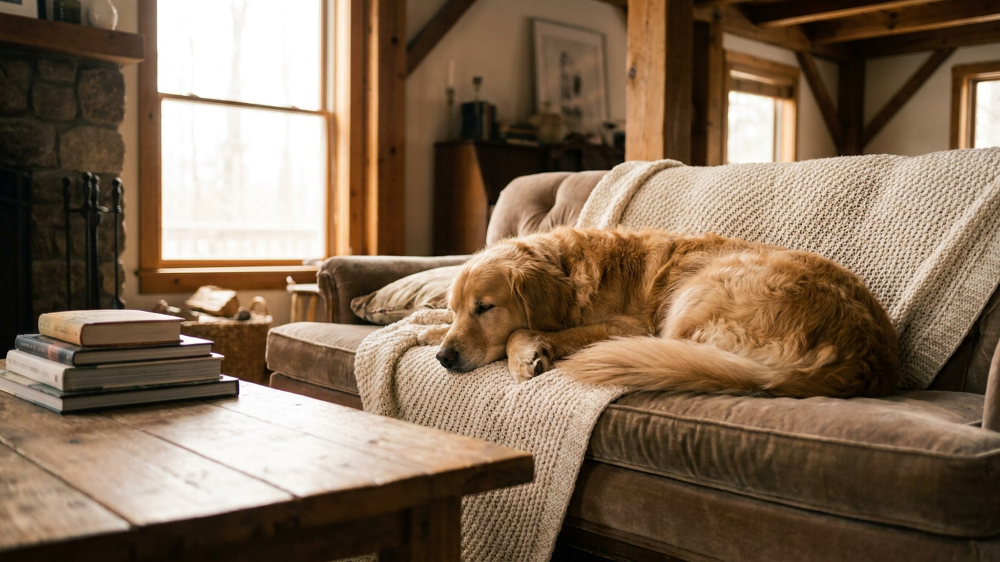

Голден-ретривер улыбается всем — детям, гостям, кошке соседей. Но за этой улыбкой стоит рабочая порода с двумя часами необходимой активности в день. Без нагрузки golden retriever переключается на мебель, обувь и цветочные горшки. Ниже — что реально нужно этой породе и как это устроить в семье.
🐾 Всё о вашем питомце — в одном приложении
AI-ветеринар, дневник, напоминания о прививках и уходе. Установите AnimaLife — это бесплатно, в Telegram и MAX.
Голден-ретривер выведен как охотничья подружейная собака: бегать, нюхать, апортировать часами. Минимум для взрослой собаки — 2 прогулки по 40–60 минут с реальной нагрузкой, а не прогулочным шагом у подъезда. Идеальный формат: бег, плавание, апорт, нюхательные игры.
Недогруженный голден не «спокойный» — он ищет выход энергии сам. Обычно это погрызанные ножки стула и пустые горшки с землёй по всему полу.
Золотистая шерсть голден-ретривера — это красиво. И везде. Порода линяет круглый год с двумя пиками весной и осенью. Шерсть оседает на диване, в еде, на чёрных брюках и в вентиляционных решётках.
Голдены заслуженно получили репутацию собак-нянек. Терпеливы, мягкие в контакте, практически не проявляют агрессии к своим. Но это не значит, что их можно оставлять с детьми без присмотра — особенно с малышами до 5 лет.
Голден-ретривер в семье с детьми — отличный выбор при условии, что собаку воспитывают, а не просто «заводят».
Голдены обучаются легко — это одна из самых контактных и мотивированных пород. Но именно из-за дружелюбия владельцы часто не выстраивают правил с первого дня: жалеют, разрешают «пока маленький».
🐾 Спросите AI-ветеринара прямо сейчас
AnimaLife — приложение, где AI-ветеринар отвечает на вопросы о кошке или собаке 24/7. Бесплатно, без записи и очередей.
🐾 Понравился разбор?
Подпишитесь на канал — каждый день разбираем по одному тревожному симптому у кошек и собак: что в пределах нормы, а когда пора к врачу. Подпишитесь, чтобы не пропустить разбор, который может спасти здоровье вашего питомца.
Голден-ретривер — одна из лучших семейных пород. Но не потому, что прост в содержании, а потому что при правильном подходе отдаёт всё: терпение, преданность и радость каждый день. Нагрузка, расчёска, обучение с первых дней — и это действительно золотая собака.
Материал носит информационный характер и не заменяет очную консультацию ветеринара.